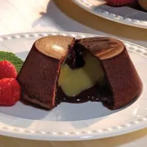

Chocolate Fondant

Description :
Simple,Light, and Delicious chocolate-fondant
Ingredients List
- 9 ounces 70% cocoa dark chocolate
- 1 ½ sticks butter
- 1 ¼ tablespoons rice flour
- 1 ¼ tablespoons powdered cocoa
- 8 eggs, separated
- ½ cup sugar
Steps to follow :
Once you have all ingredients, follow this differents steps to make this chocolate-fondant
-
Mix the whipping cream and Maille® Honey mustard. Pour into cube shaped silicone molds and freeze until solid.
Melt
chocolate and butter in double boiler. Mix egg yolks with flour and cocoa. Pour melted chocolate and butter into
egg
mixture and stir.
-
Beat egg whites until bubbly, and then add sugar. Blend egg whites into chocolate mix.
-
Line molds (3" high, 3" diameter) with greased wax paper. Fill with chocolate mixture. Place a frozen cube in
center and
cover with chocolate mix. Bake at 350 degrees for 7 minutes. Cool, remove from mold and serve.